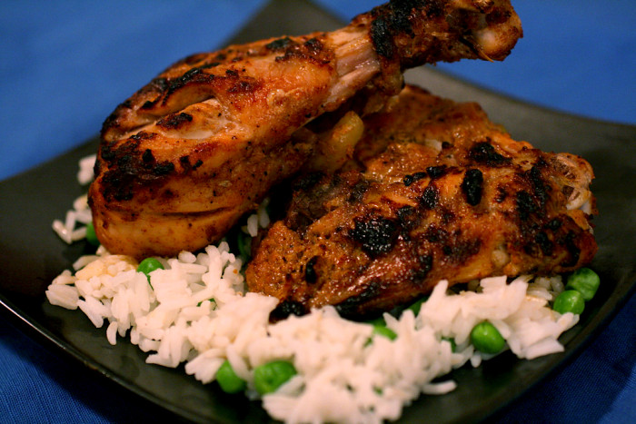

This is an authentic recipe for Tandoori chicken. Serve with long grain Basmati rice, cucumber salad, grilled veggies, roasted corn on the cob and finish off the meal with Kulfi (Indian ice cream).

- Cook:20 mins
- Additional:1 day
- Total:1 day 45 mins
- Prep:25 mins
- Servings:4
- Yield:4 serving
ingredients
- 2 pounds chicken, cut into pieces
- 1 teaspoon salt
- 1 lemon, juiced
- 1.25 cups plain yogurt
- half onion, finely chopped
- 1 clove garlic, minced
- 1 teaspoon grated fresh ginger root
- 2 teaspoons garam masala
- 1 teaspoon cayenne pepper
- 1 teaspoon yellow food coloring
- 1 teaspoon red food coloring
- 2 teaspoons finely chopped cilantro
- 1 lemon, cut into wedges
Steps
- Remove skin from chicken pieces, and cut slits into them lengthwise. Place in a shallow dish. Sprinkle both sides of chicken with salt and lemon juice. Set aside 20 minutes.
- In a medium bowl, combine yogurt, onion, garlic, ginger, garam masala, and cayenne pepper. Mix until smooth. Stir in yellow and red food coloring. Spread yogurt mixture over chicken. Cover, and refrigerate for 6 to 24 hours (the longer the better).
- Preheat an outdoor grill for medium high heat, and lightly oil grate.
- Cook chicken on grill until no longer pink and juices run clear. Garnish with cilantro and lemon wedges.